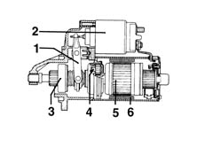

Introduction - ENGINE STARTING
- Path
- Descriptions > 55 ELECTRICAL EQUIPMENT > 5520 ENGINE STARTING > Introduction - ENGINE STARTING
- Kind
- system description
- Applies to
- all engines; all production periods
- Interactive page
- https://sloeber94.github.io/elrnDB-fMltpl/en/#/2892451
Applies to: all engines; all production periods
The starting system consists of the ignition switch operated by the key and the starter motor which is connected directly to the battery.
Ignition switch
The ignition switch with a steering lock houses the lock barrel and the aerial for the CODE control unit (5580 SPECIAL ACCESSORIES).
Starter motor
The starter motor is the direct current type with series winding. It features a high torque to give the initial impulse to the engine and a high rotation speed to support the increase in speed.
When the ignition is turned on the motor windings are supplied, producing electro-magnetic forces which cause the motor pinion to rotate. At the same time, the solenoid is energized and operates the engagement mechanism for the flywheel ring gear pinion turning over the engine.
The one-way coupling allows the engine speed to increase even when the pinion is already engaged.

1, Engagement lever 2, Electro-magnet 3, One-way coupling 4, Pinion 5, Rotor 6, Permanent magnet